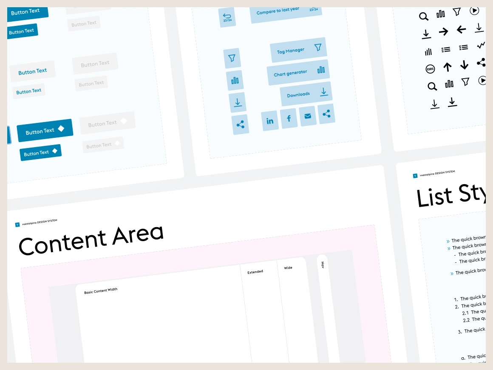
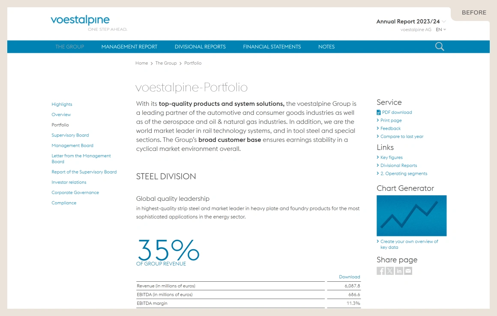
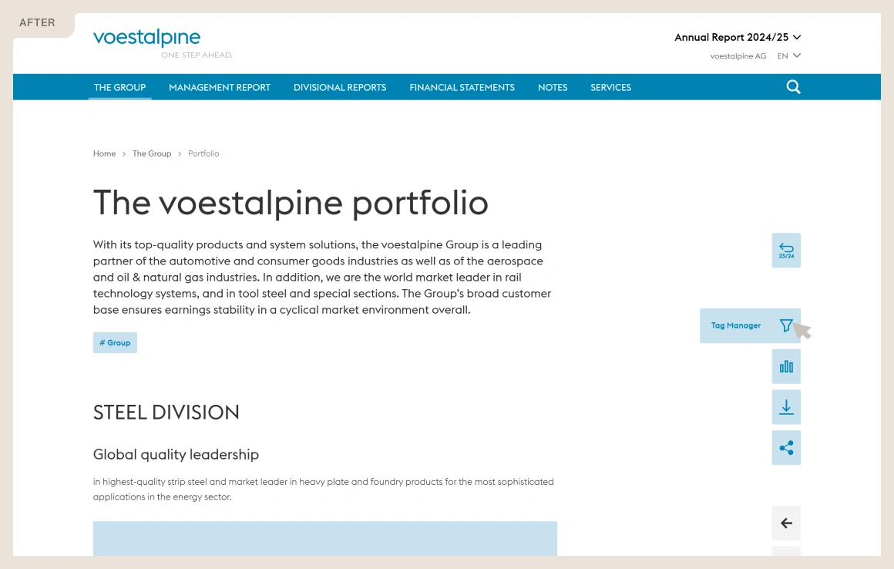
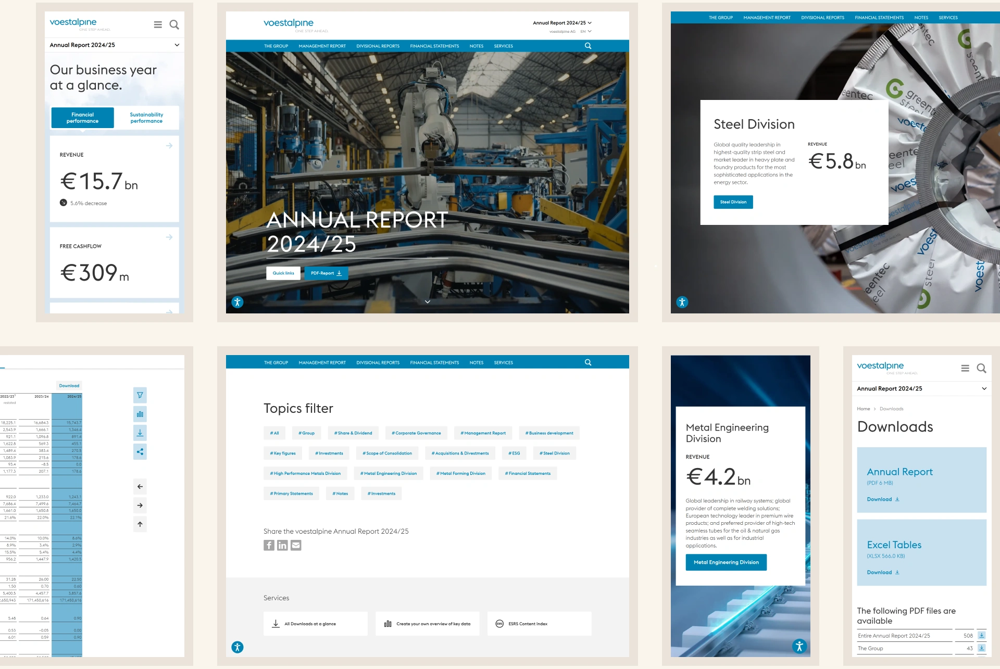
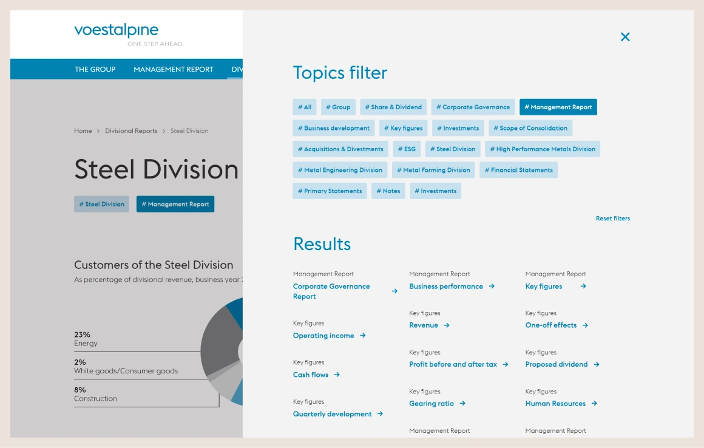
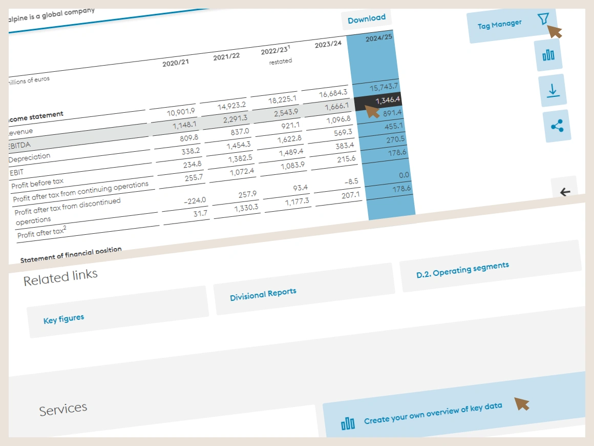

voestalpine’s online annual report had remained unchanged for eight years and no longer reflected the company’s quality or supported an enjoyable reading experience.
In 2025 my challenge was to create a cleaner, more contemporary experience while ensuring it still felt unmistakably voestalpine.




User Guidance

